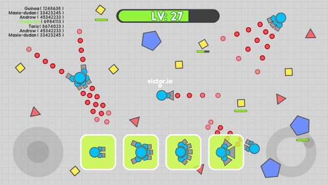
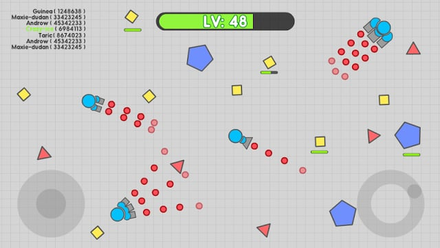

Diep.io isn't just about shooting squares—it's a complex tactical battle where tank selection, upgrade priorities, and spatial awareness determine survival. If you're ready to move beyond basic tank combat and learn what makes dominant players so effective, this advanced guide breaks down the builds, strategies, and mindset you need to climb the ranks.
🔧 Advanced Tank Builds

Your tank build defines your capabilities in combat. More than picking the right upgrade path, advanced play means understanding how builds counter each other and adapting on the fly.
The Overlord Build
Max Drone Speed → Drone Count → Max Health → Movement Speed
The Overlord dominates by creating a mobile drone swarm that surrounds and destroys opponents. The key to effective overlording is aggressive positioning. Your drones are your life—keep them close and use them to create defensive walls.
Common mistake: letting your drones scatter. In late-game battles, your survival depends on keeping your swarm tight and controlled. A dispersed drone army is a dead one.
The Destroyer Build
Bullet Speed → Bullet Damage → Reload → Max Health
Destroyer-class tanks excel at punishing overconfident players. Your projectiles are massive and deadly but slow. The key is prediction—you won't hit anything that isn't where you expect it to be.
Destroyer works best as a counter-pick. If you're getting dominated by Overlords, switch to Destroyer. Your penetration bullets tear through drone walls like paper.
The Octo-Tank Build
Bullet Speed → Reload → Bullet Penetration → Max Health
Octo-tank is the defensive powerhouse. Eight barrels of suppressing fire create a near-impenetrable wall. Use this when playing territory-control strategies where holding ground matters more than chasing kills.
📈 Optimal Upgrade Priorities

Where you put your points matters enormously. Different situations call for different priorities, but here's the advanced breakdown.
Early Game (0-15 levels)
Focus on one damage stat and one utility stat. If you're playing a bullet-focused tank, max Reload or Bullet Speed. If you're playing drone-based, max Drone Speed or Drone Count. Splitting your upgrades too early creates a tank that's mediocre at everything.
Mid Game (15-30 levels)
This is when survivability becomes crucial. Add Max Health and Body Damage to your upgrade path. At this point, people are actively hunting, and dying because you can't take one hit is frustrating. Balance offense with enough defense to survive ambushes.
Late Game (30-45 levels)
Max out your primary offensive stat and start padding with Movement Speed. At max level, everyone has similar health pools. The difference is who can rotate faster and whose bullets hit harder. Movement Speed becomes extremely valuable in chaotic late-game fights.
🎮 Mode-Specific Strategy

Team Mode Tactics
In Team Mode, your tank choice should complement your allies. Don't stack the same class—you want variety. If your team has damage dealers, play support. If everyone is aggressive, be the one who holds territory while others hunt.
The biggest mistake in Team Mode is roaming too far from your team. Even as an Overlord, you're vulnerable when isolated. Stick with at least one teammate at all times. Two tanks working together can take down anything.
4TDM Strategy
Four-team deathmatch requires territorial awareness. Learn which teams are dominant and avoid their territory unless you're hunting. Focus on the middle zones where resources are plentiful and team fights are chaotic—but recoverable.
Spawn Tag Mode
Spawn Tag is unique because positioning determines everything. Your spawn point follows the team with the most score. Stay with your team to ensure safe spawns, but don't cluster too tightly or you become an easy target for area-of-effect attacks.
📍 Arena Positioning

Where you fight matters as much as how you fight. Advanced players constantly read the arena and position themselves advantageously.
The Center Control Game
The center of the map offers the best resources but is also the most dangerous. Control it when you're strong; abandon it when you're weak. Nothing is worse than fighting a losing battle in the most valuable real estate on the map, dying, and respawning far from the action.
Choke Points and Corridors
Learn the natural chokepoints in the arena—tight spaces where your advantages are maximized. Destroyer tanks love chokepoints because opponents can't dodge. Octo-tanks love them because opponents can't flank. Draw aggressive players into chokepoints where you have the advantage.
The Flanker's Paradise
Peripheral areas are perfect for ambush tactics. Let dominant players fight in the center, then pick off weakened survivors who drift to the edges. This is where patience pays off—you can often score multiple kills with minimal risk.
⚔️ Advanced Combat Techniques

The Strafe Dance
Most combat in Diep.io is about circling your opponent while maintaining fire. The strafe dance is a rhythmic movement pattern: circle, fire, adjust, repeat. Master this and you become nearly impossible to hit while consistently landing shots.
Prediction Shooting
For slow-firing tanks, prediction is everything. Don't aim at where your target is—aim at where they'll be. Watch their movement pattern for a moment, calculate their trajectory, and fire ahead of them. This is how Destroyer players hit anything.
When fighting an Overlord, predict where their drones will move, not where their tank is. A smart Overlord will position their drone swarm between you and their body. Shoot the drones first, then the tank.
The Bullet Wall
Multi-barrel tanks can create walls of suppressive fire that deny area to opponents. Instead of aiming at your target, aim to create a barrier they can't cross. This is devastating against drone-based builds who need to approach you.
🧠 Competitive Mindset

Advanced play is as much mental as mechanical. Your mindset determines whether you make good decisions under pressure.
Know When to Engage
Not every fight is worth taking. If you're winning, don't get greedy. That damaged opponent might have teammates nearby. If you're losing, run instead of fighting for pride. Diep.io is about resource management—and your life is the most valuable resource.
Read Your Opponent
Watch how people play before committing to combat. Hesitant players are usually less skilled—easy prey. Aggressive players might be confident or might be overextended. Adjust your strategy based on what you observe.
Death Analysis
Every death teaches something. Did you overextend? Did you fail to see an ambush? Did your build simply get countered? Take a moment after dying to understand why before respawning. This mental review accelerates your improvement faster than grinding alone.
❓ Frequently Asked Questions
What's the best overall tank build for Domination?
The Overlord with max Drone Speed and Drone Count is generally considered strongest for Domination mode. However, your playstyle matters—if you prefer ranged combat, a Destroyer or Factory might suit you better. The "best" tank is the one you can play effectively.
How do I counter an Overlord?
Destroyer and Machine Gun builds work well against Overlords. Destroyer's penetration shots can hit through drone walls, while Machine Guns' high fire rate overwhelms drone regeneration. Stay mobile and don't let the Overlord surround you.
Should I focus on damage or survivability upgrades?
Balance both, but prioritize offense early. If you can't kill efficiently, you're just farming points without impact. Add survivability in mid-game. By late game, you want enough Max Health to survive one surprise attack, but your damage output determines how quickly fights end.
How do I deal with spawn camping?
Spawn camping is frustrating but predictable. As soon as you respawn, immediately move away from the spawn zone. Bullets fired at spawn points are often a telltale sign of campers—avoid those areas. Switching to a tank with good early-game capabilities helps survive the first few moments.
What's the best way to level up quickly?
Focus on pentagon clusters in the center of the map. Larger pentagons give exponentially more points. Play conservatively until you're around level 20-25, then hunt smaller players. Never fight when you're weak—farm pentagons until you're confident.
Is there a meta in Diep.io?
The meta shifts with updates and player preferences. Currently, drone-based builds (Overlord, Factory) are popular in team modes, while bullet-based builds (Destroyer, Hybrid) dominate solo play. No build is definitively "best"—adapt to what works in your matches.
📝 Conclusion
Advanced Diep.io play comes down to build optimization, spatial awareness, and smart decision-making. Your tank is a tool—know its strengths and weaknesses. Position yourself for advantage, engage when you have the upper hand, and know when to retreat. The leaderboard doesn't lie: consistent top performers play smart, not just aggressive.
Want more competitive strategies? Check out our Diep.io Tank Builds Guide or explore Krunker.io tactics for another competitive shooter experience.
Last updated: January 26, 2024
Written by the iogameguide.com team